July 19 2014 - Week 2.13 & 2.14
This week @jrwdunham begins work on a new field linguist friendly GUI for research teams, called dative.

Officially Launched August 1st 2012, @CAML in Patzún, Guatemala
To install or get non-technical info: http://lingsync.org
If you want more frequent techie updates you can find out what we are doing by "watching" our project on GitHub. GitHub is a project management tool for decentralized projects, kind of like Facebook for programmers. Anyone can add features, ask questions or leave us comments or notes directly in our GitHub issue tracker: FieldDB on GitHub
This week we did some triage and found 14 bugs we want to fix for the next spreadsheet release. We also did some prep work for field methods user studies this semester and found a injection vunerabilty in the webserver #28 which patched and deployed so some of the services had downtime #1619.
We also made a new video showing how to export entire corpora as PDFs
This week @jrwdunham and @kedersha gave workshop to the UBC field methods class (which former intern @kedersha is a member)
This week @cesine presented the speech recognition trainer android codebase at Android Montreal
This week @hisakonog created a custom datum template for language learning lessongs and demoed how to use it.
This week @jrwdunham begins work on a new field linguist friendly GUI for research teams, called dative.
@jrdunham @cesine presentation at ComputEl, and updated the Glossy Chrome extension to use wikitionary for low resource languages (many talks needed something like this to test and collect user stats for their dictionaries.), tested using Kartuli wikitionary.
@jrdunham starts postdoc and work on new UIs for field linguists.
@ggaudreault joins as an interun on the COULD project.
We made a new video showing how devs can use the install scripts to set up their computer with the fielddb repositories.
This week @cesine and @tamiik also gave a joint workshop at the Batumi Shota Rutsaveli State University to the Computer Science and Phillology departments
This week Khatuna showed us her bilingual corpus of political texts which she had built with her students. Part of the process of building the corpus required hours, days and sometimes weeks of work just to create an equivalent Kartuli translation for some technical words in English. This week we will show her developer some resources he can use to build an API for this terminology they have built so they can prove to funding agencies the reach of their corpus using a graph of the API requests over time.
This week we documented our findings about what popular apps and operating systems are available in Kartuli, and to what extent. The result was pretty good, but we identified two ways we could help, by showing Kartuli speakers how they can contribute to Chrome and Android localization. We created a github organization to broadcast our findings to other kartuli speaking developers.
We found out that because of how Google localizes Android, contributing translations for minority languages is extremely time consuming for the Android team, which means they wont be able to accept our help, not for Kartuli, not for Migmaq.
On the other hand, Chromium translations are managed using Launchpad and it is entirely possible to help out. Esma began contributing reviews and novel translations, we are waiting news to find out if she was successful!
Since Kartuli is an agglutinative language with very rich verb morphology searching for appropriate results is very difficult. Over the past few weeks of observing it seems like most Kartuli speakers prefer to search using Russian search engines, using Russian vocabulary. Mari (who is a lawyer) and Gina decided to create a corpus of law cases in Kartuli, and see if the fielddb glosser can help build a stemmer that might be used for searching in Georgian.
While Mari was teaching Gina and Esma how to use the Georgian court websites, in the middle she showed them how she modifies her search terms to get some results in supreme court cases, unlike the constitutional court search page which lets you search for an empty string and see all results... This was an illuminating experience of searching as a minority language speaker, so we decided to share it as an unlisted YouTube video despite the poor image quality.
http://prg.supremecourt.ge/ * Requires search to find documents * Need to use very general search terms to get any results, and results you get are not always relevant to your case you are working on * Documents are .html which is excellent for machines but Mari didn't seem to excited about it, we will ask her more later vs http://constcourt.ge/index.php?lang_id=GEO&sec_id=22 * Requires no search to find documents * Documents are in .doc format which users are used to * Easy to download documents so you can read them offline when you are in the village, or put on a usb key if you are using someone else's computer for the internet.
Since fielddb began we have dreamed of being able to import long video/audio elicitation sessions and semi-automatically creating datum which correspond roughly to utterances. After a few weeks of coding and testing, long audio import is ready for users to try.
This week we released the long audio import in the old import dashboard. It will be ported to the new dashboard once @jrdunham joins full time.
After making friends with some local software developers we found that
After talking with members of the TLG volunteers (Teach Learn Georgia) when they come down from the mountains for the weekend, it looks like older volunteers (August 2013) could share what they have learned in the field with newer volunteers (March 2014) using our opensource code base called "Learn X" which makes it possible to create an Android App that one or many users can use to create their own language learning lessons together using their Androids (installer) to take video, picture or record audio, backed by the fielddb infrastructure for offline sync. Like heritage learners, TLG volunteers spend their time surrounded with the language and can understand more than they can speak, and what they speak about is highly dependent on their families and what their family speaks about most.
This week @esmita and @cesine created a video showing language learners how they can use field methods elicitaiton techniques to learn their heritage language through elicitation sessions
This week @cesine gave a talk at js montreal showing how to use D3 and FRBs to make content editable lexicon nodes.
This week one of the core commiters moves to Batumi, Georgia for the winter semester to test the app in the field.
We also added a custom template for the mcgill group which we put into testing.
Working on api calls #1045 for CCURL submission

This week we got some good requests from field methods instructors (to make word lists, and to find the most recently commented datum) so we made a video showing how power users can infact do anything with the export or queries of their database using Futon.
This week @louisa-bielig demoed how field methods teams can talk to eachother using comments (rather than editing eachoters data and stepping on eachother's toes or avoiding editing data at all.)
This week @louisa-bielig made a video searching for word final morphemes (and other regular expresssions) in her inuktitut corpus for her independant study.
Back in May @louisa-bielig was working on a recursive function that could generate bracketing for bare structure trees (you can add the nodes labeles to your taste) using QTree. This week we got together and put it into the app! Now when you leave the morphemes field, if you dont already have a syntactic tree it will generate a left, right and mixed branching tree for you! You can edit the trees, if they are already there they wont be overwritten. If you want fresh trees, just empty the syntactic tree field and it will be regenerated the next time you leave the morphemes line. To export your data in LaTex, as always, you can click on the LaTeX button on datalists or on individual datum. Eventually we might add a server side process to generate your LaTeX pdf for you so you can see the result immediately (this will be helpful if you are crafting your own trees). You can put any valid LaTeX code in fields which contain the keyword "latex" (or LaTeX or Latex etc). This means you can add your own custom fields that are LaTeX source code if you want. You can use Halle-Wittenberg University's online LaTeX compiler if you dont have one setup on your computer.
We changed the colors of the morpheme visualizer (blue for short/functional, red for long/content) and made it so that if you click on it, it will run a search for you for that morpheme. We put the visualization into the search widget too so you can click through your morphemes and clean your corpus as you see words that contain the morpheme but didnt have the right segmentation etc.
We added some default copyright info to the corpus views so that users can put copyrights on their corpus if they choose. By default we choose the same license as Wikipedia, the Creative Commons Share Alike license:

Attribution-ShareAlike
CC BY-SAThis license lets others remix, tweak, and build upon your work even for commercial purposes, as long as they credit you and license their new creations under the identical terms. This license is often compared to “copyleft” free and open source software licenses. All new works based on yours will carry the same license, so any derivatives will also allow commercial use. This is the license used by Wikipedia, and is recommended for materials that would benefit from incorporating content from Wikipedia and similarly licensed projects.
For the past few weeks @jdhorner has been integrating ElasticSearch as a backend for our Lexicon webservices. This will make it possible to index and search huge corpora. ElasticSearch is designed to run on many machines, in many data centers. It is possible to "shard" your data so that the load of searching your corpus is distributed. None of the corpora have gotten this big yet, but for her internship in the fall @louisa-bielig will be working on importing websites into her database which means the data will be too big to search client side.
New apps can access this server side search via the API at https://lexicondev.lingsync.org
This week he added new buttons to train your lexicon. This will go through your datum, and reindex it to have the latest information. You can also enter a query like in the app using fieldname:searchsubstring and it will return JSON results for you to export. Later we will be adding datalist widgets to display the results for you (both in raw format or in a user friendly format) and let you embed your choice of datalist widgets in your public url page.
This summer we have been busy, adding new stuff every friday but we didnt have time to post on the blog... hopefully we will fill in the details when we have more time in September.
We added a new link in the user interface so you can just click to see all the data in a session. What it does is enter the session's goal into the search box, and press enter automatically so you get a new data list filled with datum that would match that goal. This lets you see similar datum rather than exactly what is in that session, since the only reason you might want to search a session is probably to find the data from that or a similar session.
We always planned that the first corpus anyone would make would probably be a practice corpus, thats why it has a non-descriptive name. But, when you create a second corpus, based on the first one, it was using the datumfields from your practice corpus. @katire asked us if we could make the datum fields the defaults if it was a practice corpus, that way the user isn't stuck with some strange fields they put in while they were practicing. Now its done, if you create a new corpus, and you're in your first corpus, you will get default fields only. But if you are in another corpus, we will copy the fields for you so you don't have to re-create them (since we expect that you will probably have a set group of fields that you use for most of your corpus we don't want to make you re-create them, its easier to copy them for you and you can delete them later.)
@gretchenmcc @carolrose @cesine @senhorzinho got together to play with the Migmaq project's data cleaning efforts. They wrote some new map-reduce functions for data cleaning and identified a couple of new fields which would be necessary for cleaning, that should be automatically learned and human editable like syntacticCategory.
senhorzinho has been working on a new module that lets users input data like an Excel sheet. The module will probably ready for use in a couple of months.
When we converted the app to run as a couchapp we waited until it was stable before turning the activity feeds back on. We hope to release the activity feed as a separate Chrome extension sometime this semester. The activity feeds are ready, but we still need someone to make an options page so that you can decide which activity feeds you want to use. Having a separate Chrome Extension allows you to install the activity feeds without the app, or have a dashboard without the activity feeds and have notifications in the top corner of your Chrome telling you if other users have been active.
The Android app restarted in November with Elise's work to make localization generic, so that it would work outside the Chrome extension, as well as getting TouchDB up and running so we could have an offline local database. We released to the Google Play store this week. We will be adding more Android-specific features (like taking pictures, and recording audio/video) as we get time or people who request them.
We moved the couchDB views (queries) which generate lexicons and the morpheme visualization into the pages couchapp so that its code can also be in the codebase and we have less things to copy when we create new users.
We invited some of our developer friends in Montreal to come join us, eat pizza and code for a weekend. There are pictures on the Google Plus Event.

Hi Montreal techie types, former classmates, NLP enthusiasts and former interns!
We are planning on a hackathon style weekend complete with pizza and opensource fun! The idea is to get together and code while volunteering on the FieldDB project (McGill & Concordia Ling departments) by closing bugs. It looks like we have 80 tiny bugs/features that could get closed in 2 days if we can get about 20 people in a room. The bugs range from automatically extracting images and sound (you will learn OpenCV or Praat and how to make webservices in Node.js) to simple features that would take between 1-3 hours to implement (you would learn Javascript, Backbone.js and maybe how to build clientside offline apps). If you want to get into mobile development, we even have some Android you can do.
It's a chance to do something you might never have done, we will have people on hand to train you and share what they know. We will probably be about 8 people who are regular committers, and our friends who just want to hang out and code for a weekend.
We have got confirmation do the hack-together at Notman House! For those who are not in Montreal we will also open up an On Air Hangout so you can hack with us on the big screen! So If you're looking for some good open source karma, or tend to spend your weekend coding alone anyway, join us!
---------- Forwarded message ----------
From: cesine <notifications@github.com>
Date: Thu, Jan 17, 2013 at 9:15 AM
Subject: [FieldDB] Lets have a bug fixing fiesta! (#798)
To: OpenSourceFieldlinguistics/FieldDB <FieldDB@noreply.github.com>
Cc: fieldlinguist <info@fieldlinguist.com>
Hi @gretchenmcc @Kedersha @hisakonog @jessicacoon @balamkej @alanbale @carolrose @fieldlinguist @senhorzinho @ymanyakina
This session the interns are focusing on data entry so we don't have anyone to help close issues, which means that bugs and features are piling up and are only geting done whenever I have free time. If you have a friend or know anyone who wants a pet project, or some experience in HTML5 or Javascript, or NoSQL, and data management forward them this issue :) We have some cool new features planed, including automatically generating datum from images and from long audio files, split on silence into utterances! We can show someone how to do this if they are excited about automating image/audio processing!
@jessicacoon @alanbale what do you think about ordering pizza and organize a "hackathon" on a weekend to have a bug closing sprint? we are up to 130 open issues, about 100 of them are tiny, mostly focused on the user interface and usability and would take between 30 min of explanation from me or @gretchenmcc or @Kedersha or @hisakonog and then anyone could do them in about 1-2 hours...
We can maybe even get space at the Notman house or at the Ling department, and set up a Google hangout and invite friends who aren't in montreal to hack with us live on the big screen :) If you have anyone or any of your students in mind who you think might become a FieldDB power user someday, let them know. The more the merrier! Even if they cant code we have issues they can work on. I will also forward this around to my techie friends too, maybe they are looking for some OpenSource to contribute to :)
Xianli's project this semester is to build a custom datum entry dashboard for transcribing images for the Myaamia Project. He put his new testing app in the chrome store so that the members of the project can see how it is going.
We were among a lucky group of developers (we say this with a grain of salt) who got stuck by a bug in the Chrome store. When we tried to deploy the new version of the app (v1.40) for the beta testers, the Chrome store gave us a warning that we had to upgrade to the new Packaged app manifest, but when we upgraded it said that this feature was not yet available. When we deployed without the url permissions that were used to contact the database, we could no longer reach the database!
This started us on a week or so long journey to migrate our Testing servers to EC2, and put a CORS proxy on them so that we didnt need the url permissions in our chrome manifest. For details see the new "Corpus Web Service" which is essentially just CORS proxy customized for proxing only CouchDB.
We continued testing the features of the app to prepare for a release on Jan 28th, when Gretchen was going to U Ottawa to give training.
When we designed the app we knew that everyone's data was different. We don't all have the same 6 fields that should be filled in on a datum, sometimes we have over 20 fields but they aren't always obligatory. To make the interface less cluttered we designed it so that rare fields would get hidden in a tray under the frequent ones. To do this was just a bit of statistics on which fields the corpus was used most. We set it so that if the datum had the field less than 50% of the time, it would be hidden. If this is too much let us know, we can try hiding fields that are 30% present in the data, or eventually building some fancier models to detect what the goal of the datum was, and show fields based on similar datum with that goal.
Our pouchDB set up opens the database every time an object is created. This was originally because we wanted to have more than one corpus open so the object had to know which pouch (corpus) it would go into. This makes the offline app very inefficent. In December we started the work to make the app be in continuous sync, and use pouch when offline (not all the time).
In our multi user testes we found that having sessions and datalists inside the corpus were createing merge conflicts. We refactored the corpus to use quieres to find sessions and datalists. While inefficient on the offline version, queries on the online version are cached so shouldn't slow down the dashboard building too much.
We always wanted the app to open with data, no need to login or register to get an idea of what the app is. But, along the way from beta we introduced a welcome screen that blocked you from seeing what the app was, mostly because we didnt have a public user set up so that if you log out, we would take you to the public user. In these few weeks we started teh work to add public users on all the servers, and now when you log in and log out, it is the public user's dashboard that you see.
Spurred by a kick in the butt by our favorite beta tester, we fixed the nav bar. It was broken since the day it was created, back in June but it never hit our top priority. We upgraded our Twitter Bootstrap (a library to make user interfaces), jQuery, which made the update of the navbar obligatory as it was finally visually broken.
We also moved all the notifications into a hidden area, where you can see them if you want to, but if you dont want to they will just pile up hidden from view.
In preparation for finally moving the activity feeds into widgets (as they were originally designed), we moved all the activity creation to a central function on the app, which will either make offline activities if needed or post the activities directly to the master couch so that the teams can get instant popups/notifications other about what everyone else is doing.
We designed the app so that it had a button to sync, it didn't sync continuously. But if you're working in a team, in the same room at the same time, and you don't have continuous sync on, you are likely to get merge conflicts on sessions and datalists and corpora. (and even datum if you are in the process or reviewing/cleaning rather than creating). To make it easier for teams to collaborate in real time we are adding a mode to the app that does continuous real-time replication. This is technically possible with pouch, it will just attempt to replicate, if it fails it will try again later. We'll keep you posted on how it goes...
We have started some new widgets (complete with build and minification, and embedability in WordPress sites). The development is going great, so far we have the code running, minifing and embedded into the app. Our next steps are to make the widgets customizable via routers, and have them poll for new activities every once in a while (most likley configurable in the routers)
To run a widget on an external website (outside a chrome extension) the user has to simply embed an iFrame, just like they would embed a youtube video. We expect to serve the iframe from the users' activity feed or teams activity feed's couch were it wont face CORS blocking by iriscouch. To make this happen our plan is to add a checkbox in the app somewhere which says "allow public users to see my/our activity feed." We will be testing the activity feed widgets with the Mi'gmaq team over the coming weeks.
This week we started drafting up a new conversation module, it will allow you to have multiple speaker with overlapping utterances. We are working a new visualization for this with a time axis and the possibility to replay the conversation.
We moved the app's files around so that it is now running out of a couchapp, what does this mean? It means the app is now running in a users corpus, as an attachment and has full access to the user data (if they log in as themselves) which means the app can potentially be used offline in Chrome and Firefox, outside a Chrome extension. We also tested running out of a touchdb on Android, which is also working. We had to change some things in the app to get it to work (font awesome icons and bootstrap dropdowns).
This week we added the server side and client side code to finally let users add each other to their corpora as readers, writers or admins. Now, if someone shares their corpus with you and gives you certain privileges the server will email you to let you know, and tell you that you have to sync in order to bring this new corpus down to your local computer. This is a very exciting change and really makes the team activity feed have a purpose. We did a bit of testing so far:
Our conclusions is that yes, the plans we made for the teams and permissions are working, the datum from each user end up in the same corpus and on the other user's computer if both click sync to sync their local data with the team server. But, we get very odd behavior involving what is "most recent" for the datum. It might have to do with timestamps...
We also have a pretty bad result with when users are editing a datum at the same time: it looks like right now, out of the box (we haven't even had time to look and see if there is a doc conflict error) each user sees only their version of that datum. Our hope is that Pouch is complaining and getting a document conflict error so we will be able to catch it, alert the user that there were two users who tried to edit the datum at the same time and then send them to the database admin panel on Futon to go and resolve the conflicts manually.
On the thrusdays of these two weeks we had a bug fixing fiesta to put out a new release in preparation for beta testing with a field methods class in January. We closed roughly 29 bugs, and opened over 41!
Some of the more exciting bugs we fixed were the ability to finally push enter when the app asks you to confirm that your identity #559. This is something we had been looking forward to fixing for a long time but was rather tricky since the modal that pops up is not C-commanded by the authentication code. We had to move the code that captures key events on the password field up to the App level where it could c-command the modal.
We also started drafting a second iteration of much of the text instructions in the app, notably the search text and the quick start instructions.
We finally added a bit of code to make it possible to do a datum wide key word search. If you now type something in the quick search box, it will search all the datum fields. Of course as before you can also specify that you want it to only search in the utterance, morphemes, gloss or semantic denotation fields etc.
We found a pretty funny bug, if you enter something in a corpus, then create a new corpus you would automatically get the text you searched for as part of any new datum in that corpus. The reason for this is that the search page is composed of all the datum fields currently in your corpus, and if you have a search active when you leave the app, your search can be there when you come back. The odd text popping up in Datum was a side effect of this feature. We put in some code which copies a clean version of your datum and session fields when you make a new corpus. We will eventually need to add a way to remove a default datum field from corpora. At the moment if you have a corpus specialized for phonology, and then make one that you want to be specialized with datum fields for semantics, you will have all the fields that you had in the phonology corpus. Of course, we expect this to happen rarely since users will most likly have a set of fields they use for all their corpora.
We had some complaints about Sapir as a person, so we contacted the LingLlama to see what he would think about letting us use the LingLlama as a sample user, he said sure. We are super excited to have a new sample user, one that is fictional!
We started working on an All Data button that would automate the process of searching your datum, creating a data list for you, titleing it with the date, saving it and making it full screen. This is one of the biggest mysteries when you open a field linguistics program, and one of the reasons people stop using it before they even start. If you can't see your data so you are wondering if the app is working. We have always planned that you should be able to see your data in one huge data list, and that when you open the app you have the last data you edited shown to you in the middle of the screen but this had some technical challenges behind it.
The biggest instability in the app since we switched to having three main dashboards (a register page, a user page, a corpus page) was that you had to sync down from the server before you could use search. Why was this, you might ask? It has to do with views. Views are a "view" on your data in CouchDB/PouchDB terms. Essentially there are a couple of key views in the app that make it possible to find your most recent data, all your data, and all your activities. Since when we first built the app we didnt know how to create views on the PouchDB (local, offline database) we were making them on the server when we created a new user, this meant that before your user's dashboard was complete, you HAD to sync. Since very few users believe the sync button is necessary (they are working alone, and/or don't want to back up the data that is largely just them playing around with the app) these views weren't being created and so when the app tried to use them it was producing silent growns that the user had no idea about, unless they opened the console and looked.
Over the weekend we sat down and took some careful time to figure out how to create the views using PouchDB locally, offline, when the views are needed. So, we now have a couple of new messages in the app that tell you when we are initializing search for the first time, or initializing the query/view that finds your most recent datum and puts it into the data entry widget for you.
It is so exciting to have the app back to what it was doing for about 1-2 weeks in July, showing you all your data, and showing you your most recent data when you open the app.
Data entry so far in the app was mostly focused on import. We figured those that have data, are most curious about how hard it would be to switch to a new data management tool. Now that we are preparing for field methods, where we expect the users will actually be using some of the auto-completion of the app to enter data, we did an audit of how the data entry flow works.
Some important questions were:
We went through all these use cases and made sure they worked. Oddly enough, the tabbing to the + New Datum button had some important consequences. The app is using something called a router. The router is a lot like a web url which you would see on a normal online app, except that it has a # which divides the part the server handles, and the part the client side app handles. The good thing about a router is that it allows users to book mark what appears to be a 'page' to them, ie import, or a datum, or a data list etc. By turning the new datum into a route, we can now link to it from many areas of the app, and we can cause the link functionality of the bootstrap button to trigger the display of a new datum, complete with putting the cursor in the first field of the datum (an invaluable asset for a data entry app).
Originally we wanted to the app save datum every 10 seconds, so that the user wouldn't loose their work. Almost all our users found this didn't make sense, they would rather save the data by clicking on a button. If they don't click save, don't save.
So, we added a save button in addition to saving every 10 seconds. The save button was acting kind of oddly, sometimes saving, sometimes not. We took a look and saw that the button was only saving if the datum thought there had been changes to it, rather than saving directly to the database. We made the save but save 100% of the time, and commented out the code that saved the datum every 10 seconds. The app still saves the datum if it has been changed and falls of the datum entry area. We really need to think about this and re-design the save in a way that users like, rather than trying to reduce the number of versions in the database.
The McGill server will have have a very special CouchDB configuration. To our knowledge this will be one of the rare times on the internet that a CouchDB will be running out of a directory (actually a virtual directory). The reason for this is that the University would prefer to route all traffic to the server through Apache, so that the traffic can be analyzed using their existing log monitoring systems. This is especially important for DOS (Denial of Service) attacks where malicious servers repeatedly contact a server for all its content in attempt to over load it and thereby "deny" service to anyone legitimately trying to use the server. What this means for CouchDB and Node.js, two technologies designed to have support for high concurrancy, and support lots of live connections is that they will be throtteled down to the speed and capacity of an Apache server. If this were the main LingSync server we would probably point this out to the University and tell them that they are being silly, but because we only expect about 5-10 people to use the server, and they wont connect very often we figure its not worth explaining to them the difference between Apache threaded connections and Erlang or Javascript event driven connections.
To prepare for this change we added a path to all new corpus connections, and added code to make existing corpus connections compatible with the new server code (which is the same for the McGill server and the production and testing servers). We hope this wont introduce bugs, and whatever bugs there are we will catch them soon. We are going to wait about 2 weeks before we put the McGill server into production to see if there are bugs that we didn't catch in our internal testing.
While we were in Guatemala between talks we were refactoring and cleaning up the handlebars to reduce the number of handlebars that had to be copy pasted to update menus when small changes or new buttons were added. The Corpus handlebars had roughly 6 minutely different versions which created a nightmare for localization. While we were reducing the 6 down to 2 we lost the div that held the corpus visualization! We didn't even notice it was gone until November. We traced back the commits, found it (it was just one line) and put it back in. Now its all working in is crazy flying glory. Its fun to have a data visualization, but hopefully someday soon someone will have time to change the visualization into something that actually has meaning for linguists, at the moment its just the linear locality of morphemes... not even arrows to indicate precedence.
Long data lists take about 10-50sec to load into memory, sometimes much more. We added a spinner that shows you the progress of loading your dashboard. Although not ideal at least this way the users know something is going on while the dashboard is loading. Before it used to say "untitled corpus" and that was the only indication that the dashboard hadn't finished loading.
Finally we found the bug that was making inserted columns in the import not be droppble, which was pretty odd behaviour and pretty annoying. It all came to a lack of "self," yeah no joke. In javascript, an object has a "this" which refers to itself, and lets it access its own member variables or functions. The code that was attempting to add the drop listeners to these inserted cells was using "this" but in a scope/closure where the this didn't mean the ImportView (the object that knew how to handle the drop event), but rather to the actual html element itself. The problem was easily fixed by binding this to a new variable, outside the closure, and then referencing it inside the jQuery scope that was creating the html elements.
When we first set up the localization we used the built in Chrome localization API, what this meant was that the app as of July 30, no longer worked on the web or on Android. This week Elise braved regular expressions to a system wide find and replace so we could use a more general localization strategy, now the app can run on the web again!
This week we also kept working on trying to make the import page simpler. The import hadn't been re-designed since the night it was hacked together in July for a pre-alpha demo, it needed some love :)
Our clickable prototype is out there and looking good! Watch the video for a tour. If you want to try clicking around in the prototype, you can install it on your Android by clicking here: https://play.google.com/store/apps/details?id=com.github.opensourcefieldlinguistics.android.lessons
Our new production services/servers are now live in the lingsync.org namespace. It took some time for the dns to resolve for all the components to come together. We are using Nginx to delegate the https connection to different node js web services on different ports. We released version 1.24 stable which is using the new permanent production servers. We're so excited that the app finally has a home and database that won't be moving any time soon!
We are slowly making progress towards getting public urls for those who want to let others see their corpus publicly. We are realizing this is a top priority for grant committees, but for research team it is super complicated, requiring them to get approval from their language consultant to open their data. Essentially, we don't know anyone who actually needs the public url right now so we haven't been making it a priority.
@trisapeace and @cesine presented the technical sides of the app at Javascript Montreal. In the process we added the read only dashboard which was more of an exercise of showing what require can do to build different versions of the app.
Since she finished the Learn Mi'gmaq prototype this week Elise also looking back into getting the app to run offline on Android and iPad using TouchDB. When we found out that Chrome worked on Android and iPad we planned to use the Chrome store to run the app on tablets. But, it turns out that the Chrome store isn't available yet on the mobile version of Chrome. We had some old code from June which started setting up TouchDB on the android. Elise explored the codebases, and another code base for keeping a Grocery list offline using TouchDB.
At one point this week we woke up to a dashboard that wouldn't load (it just said Untitled corpus). The culprit was a new version of Chrome (we are using the beta version, which is about 1 month before users). It turns out that the IndexedDBs created with previous versions of Chrome need to be updated. We have two options, try to fix PouchDB's update function and contribute it upstream to the PouchDB guys, or write a script to log users out, move their databases and the log them back in so that they have fresh new pouches filled with their data. We created an issue for this here... Handle when users upgrade to Chrome 23.0.1271.17 we have 2 weeks to get it sorted out
This week we worked on refactoring (thats techie talk for re-writing and re-designing) the authentication webservice so we could use up-to-date libraries. We were stuck on an older version of node because the authentication library we were using was using an older version of express etc etc. Now we switched authentication libraries, and switched database back-ends so now users are stored in a couchdb also. We also added a mailer library to send out emails to users if they forget their password and to welcome when they first sign up so that they have their username written down somewhere.
Its been 5 weeks since we deployed an updated version of the app, mostly because of big changes that needed to be done (like the authentication server) before we could let users really use the app, not just as beta testers. This week we deployed a new chrome extension which is on the bleeding edge of development, once its stable enough the developers are using it, version of the app which we are calling "unstable." So if you like to be on the edge, or just see what new features are coming up, you can install that version at the same times as the normal (stable) version. Ideally we would like a couple of people using the unstable version for about a month or so before it will go into the stable version. It depends on the speed at which we are developing.
Having a clean auth service helped us roll out the new corpora feature faster. We also changed the way the dashboard loads. Before it would start at the index, see if it knew who you were, and then see if it knew which dashboard you last used, and then redirect you to the dashboard page if it knew which corpus, session and datalist to load. That was fine for development and for testing the dashboard but we really needed a way that you could change between corpora safely. Because the Pouch database (which is unique per corpus) must be set on all objects are saved we had invented a rather complicated work around to be sure that objects where saved into the right pouch the first time. Now we have added an intermediary page (a users dashboard) which will load your user info and let you choose a corpus if it is unable to figure out what to load for you. This greatly simplifies the loading of a corpus and in fact, if a user is on the corpus.html page we can now guarentee that the pouch they want to work in is known so we might be able to refactor out the workaround that we put in place back in June. In theory, this should make the app much more stable as we are finally getting closer to how it was designed to be, not how it had to be so we could debug, it has certainly reduced the number of ifs.... We won't know for sure if the new flow is stable until we get a few more testers using it.
We are also excited to announce that the Default/All Data datalist is gone. We have had it in the app for a longtime, before we had search, largely because we wanted to be able to show you a list of your datum, and we didn't have search to be able to retrieve it. We've had offline search in the pouch for a long time now, so its about time that we use search to show you all your data. This greatly simplifies the app. Before if you saved a datum, we had to see if the All data list was active, and insert the new datum at the top so you could see it visually as you entered data. In addition, if the All data list wasn't visible we had to go into the corpus and insert the datum into it, and then be sure that the All data list that was in the corpus, got saved into the pouch before you wanted to load it. Essentially an nightmare of de-normalizaiton . So it is with great pleasure that we tell you that you can find all your data, by clicking on the search icon. Of course, if you have a lot of data it will take some time to load the data list. We will modify the Infinite Paginated Updating Collection view to be smarter about how much data it loads. That will have to wait...
At 10:57am Eastern Standard Time yesterday morning (Friday September 14th 2012-09-14T12:12:57-07:00) a former intern inadvertently leaked admin password to the CouchDB account used to create corpora for the Beta testers.
What this means is that unauthorized persons could discover the password via a commit on our repository and access/delete/administrate the data in beta tester's corpus databases hosted at https://ilanguage.iriscouch.com/_utils This leak did not create any vulnerabilities in your private user data (i.e. email, first name last name etc) as that data is stored in a different database.
At 19:26pm Eastern Standard Time this evening (Saturday September 15th) we rolled out a fix to the vulnerability on the authentication server, and the Corpus database server. We also turned off the registration of all new users in the Chrome store app and started an investigation into the impact of the leak.
Database and log analysis have shown that the no corpus databases were accessed or modified during this 17 hour time period. All affected users have been or will be contacted once we are certain of the findings. To make it easier to contact users once we leave beta we will be asking users to provide an email address when they register, as is standard with most websites.The root cause of the vulnerability was an trusting an inexperienced developer with sensitive credentials, and a subsequent "check-in" of those sensitive credentials into our GitHub repository, a problem which is common among inexperienced developers.
Prior to the leak we had initiated a full audit of the codebase to ensure that no instances of this vulnerability were present. This audit is was complete on Wednesday, Aug 29, 2012 at 2:05 PM, however the developer in question did not read the emailed instructions and inadvertantly commited the sensitive files and pushed them to their GitHub account, making the files public. I am going to personally ensure that we our strategy going forward to prevent this type of vulnerability is enforced. I sincerely apologize for allowing this to happen.
While no damage was done, we believe it is important to keep you informed about the security of your linguistic data. We will continue to encourage inexperienced developers to contribute to the project, as that is one of the main reasons we made it: to empower linguists to build and modify their tools, however we will no longer trust inexperienced developers with sensitive deployment config files. Security is our priority and I will be arranging external security audits to further test our security measures and give you peace of mind.
This Thursday we started working on an outline for a new module (with our new intern, Elise). This module will be an aid for language- learners, giving audio/visual and textual language lessons. The goal is to make it easy for teachers and field linguists to work together to make lessons from their corpora.
The top is the welcome screen for learners, and the bottom is the screen to choose which thematic unit the learner wants to work on. The unit choice screen also gives a quick update on how much of the material the student has finished, by showing progress bars.
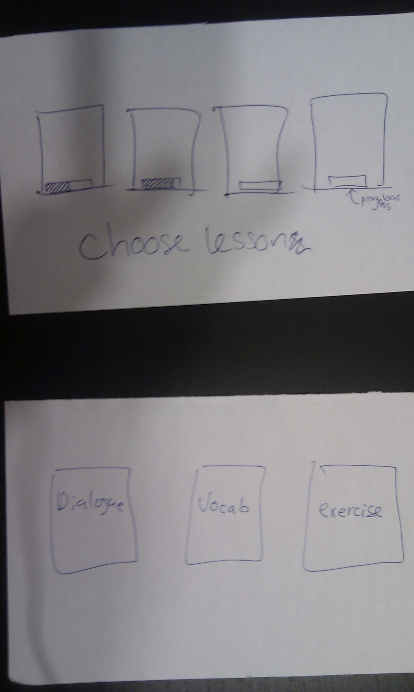The top is the lesson choice screen, which also has progress bars. Each lesson consists of three components: Dialogue, Vocabulary, and Exercise.
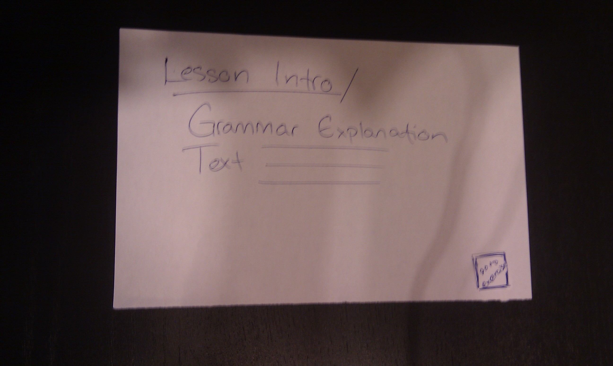When the student chooses a lesson, an intro screen will show up to summarize the coming material.
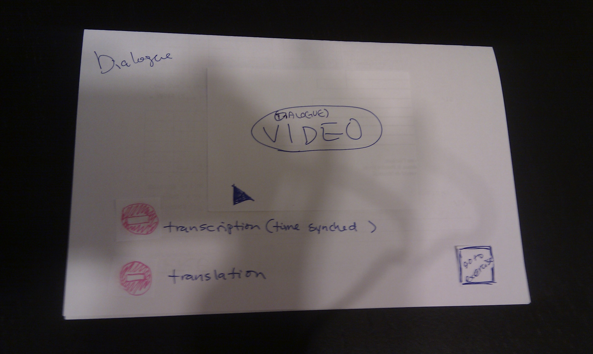Dialogue: This has a video and audio of a conversation between two speakers. The student can show textual transcription & translation, or choose to hide the text to better immerse themselves in spoken language. The transcription is also time-synched with the audio.
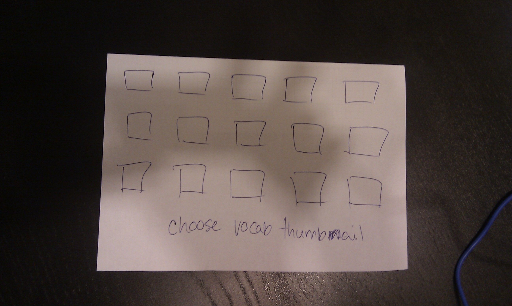Vocab: In this menu, the student chooses which vocab item that they want to learn.
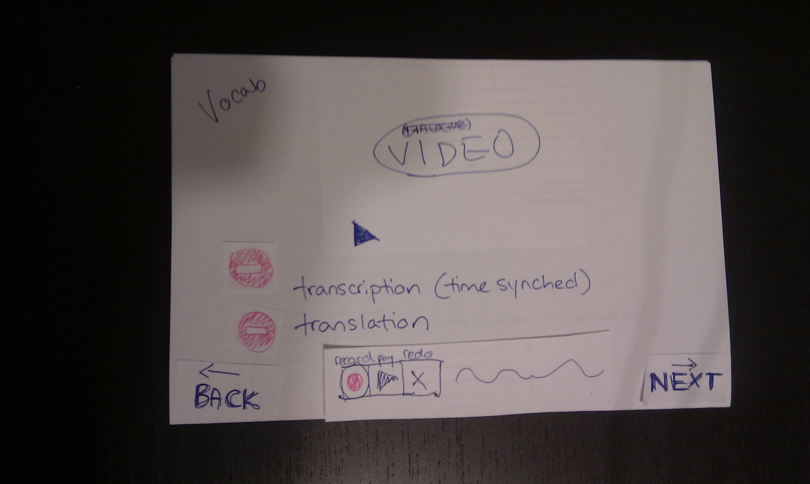Vocab: Here, there is a picture/video and audio demonstrating the word. It comes with optional transcription and translation. Students practice the pronunciation by recording themselves and listening to their recording compared to the given one.
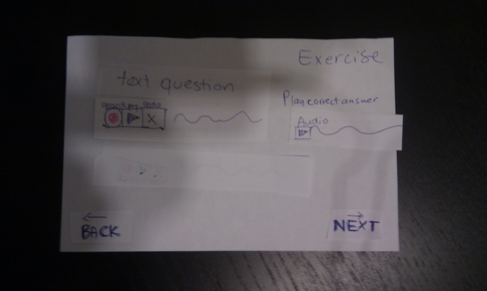Exercise: There is a textual question (in English), and the students record their response. They can also listen to the correct response.
This week we started setting up FieldDB on a McGill server, and adding more documentation for others who want to set up FieldDB or set up a developers environment for FieldDB.
Gretchen also made us a Facebook fan page where we can put some non-technical updates when we release new versions of the app (we will probably keep the technical updates here so that normal users don't get confused with this techno-babble), she also made a sort of user group on facebook called FieldDB keeners to let "FieldDB keeners" share slides if someone in their department asks them to give a presentation. Yuliya's department at Stony Brook was curious too so she will probably be giving a presentation in October. We also showed the app to Michael Diercks at Pomona (California) who will probably join our advisory board and help us test the app for use in a field methods class. We went through the app looking for bugs and unfinished features that we need to have ready and put them into the Field Methods Beta Testing Milestone
With the new Facebook pages we also need a real logo! If you know anyone with some design skills please send them to our fan page where we are brainstorming the logo, we'd like to have one by the end of September.
We also refactored the comments to move the code to the models from the views to reduce code duplication
We made finished making the two activity feeds functional, sycnable to their servers and saveable. While we were at it we and added cute icons for all the objects in the system (sessions, datalists, corpus, permissions). We also made the activity feed cuter using icons for actions and direct objects, and most importantly, we now have nicer timestamps (i.e. 2 seconds ago).
This week we created new Spanish screencasts to prepare for a workshop on how to use FieldDB to enter/import data at CAML. We published them to YouTube after we came back because we didn't have good enough internet at our hotel. Here they are:
The CAML room didn't have tables or a lot of space to walk around and help participants so instead of giving a workshop and showing how to import data we just demoed the project and answered some of the audience's questions. Some of the most important questions we got were about import and export file types and why we were making a new software for field linguists. Gretchen incorporated the audiences questions into a new slide show and we put up a spiffy website. The demo was live streamed by the Patzun municipality.
We also got together with other techie linguists for a "hacking" session on Thursday night at the top of Patzun Plaza to share tools and tips in extracting particular examples from fieldwork data using Unix commandline tools like the recipes in Unix for Poets. Below are some screen casts Emmy made in Spanish for some of the Chuj speakers for how they can use regular expressions to extract info from their transcribed child language acquisition data.
This week we merged in the localization branch and the bug fix/new features branch. It was a big merge and took us about a day to do. We worked on fixing some of the resulting bugs where events were getting lost due to a mixture of layers of help popovers and jquery calls to modify non-existant dom elements. We got most of the bugs fixed so that we could demo at least the ability to gloss and find morphemes, visualize morphemes, add comments on all objects in the system, import data from csv, add new datum fields to the corpus either by importing or by hand, searching data etc.
This week we implemented some of the beta tester requests including importing .sf Toolbox files, adding tooltips on all the buttons and icons to tell the user what they are for, and minimizing some of the dashboard widgets (datalists, activity feed, unicode).
We added a user interface to add other users to your corpus, either as administrators, or as contributers who can edit info/data, or collaborators who can only see data. We also added a user interface for you to change your corpus from private to public or public to private.
We worked on localizing the app so that we can translate it seamlessly into Spanish, in preparation for our launch at the Corpus Approaches to Mayan Linguistics workshop in Guatemala.
We also fixed a bug in advanced search that wasn't showing all the corpus' extra fields. (It was cloning the copurs fields too early, now when it renders, it looks up the datum fields and session fields so it is always up-to-date).
We refactored the way we were saving models in backbone to create a save method that makes sure the model is saved in the right pouch, and made sure that the model was interconnected where it needed to be in the app (ie, if it is a new session, save it into the corpus, and put it as the most recent session for the user so we can re-load their dashboard if they leave etc).
We refactored the confidentiality encryption for datum in the new datum architecture (where each field is an object, not just a value) by adding a custom save function in the datum fields (which gets called each time backbone tries to set something on the DatumField object).
This week we also refactored the data list module to use a paginated updating collections view, cleaned the app router and app view to reduce the number of views to just 1 per edit & read version of the models for DataList, Search, and Corpus, reduced the number of duplicate events fireing by destroying views when we rendered over divs, refactored search, created a new widget for search just above the data list, made any datum matching the current search query automatically pop up in the temporary search list for Alan, and turned the activity feed into paginated updating collection too.
This week we built a morpheme segmenter using the user's morpheme segmentation line to find morphemes. It takes in the previous morpheme lines, creates linear precedence rules for the morphemes and then stores these as rules. When it is fed a new word (or sequence of words), it looks up in these precedence rules to find potential matching rules. Using the matching rules it tries to build a mini finite state machine to segment the word into morphemes. On our sample of 76 Quechua utterances it usually misses 1-2 morpheme boundaries per word. It is designed to keep "learning" each time the user syncs up to the server the get the latest version of their morpheme finder's precedence rules.
We also built an auto-glosser which takes in a word (or a line of words) and looks up the potential glosses for each morpheme in the lexicon (which, like the precedence rules is built from previous existing datum). At the moment it takes the most popular gloss for the morphemes. It also assumes you are using Leipzig conventions to gloss your data. Like the morpheme finder, it gets smarter the more data you gloss.
Both the morpheme finder and glosser are trained on your corpus, but in reality any corpus can use any precedence rules or lexicon. This is done so that if you have a large corpus of cleaned data, you can share your precedence rules or lexicon with anyone working on the same dialect so that they don't have to build up a large corpus to take advantage of semi-automatic morpheme/gloss prediction.
Using the precedence rules extracted from the corpus we were able to do a really quick visualization using a Force Directed graph in D3. D3 is a pretty awesome javascript visualization library that makes SVG (ie, images that you can edit as vectors, and print at any size!). We looked around for visualizations and settled on a really quick simple one which lets you see the morphemes as nodes in a connected graph, where each edge (connection) in the graph is a linear ordering. If you hover over a node you can see what morpheme it is, and by the color you can see which morphemes need to be cleaned (ie ones that are abnormally long are in orange). Later on we will make some more visualizations (hopefully something with more linguistic info), and make it so you can click on the nodes and see the datum that the node came from (useful if you want to use the visualization to help you clean your data).
After some work the HTML5 audio player is finally working properly, you can drag and drop an audio file from your computer to the audio player in the datum you are working on. It will save the audio file in your FieldDB's local file storage. We still haven't set up the audio file server so the audio files are not being synced when you hit sync, but they are safely stored in your local FieldDB without a problem.
This week we demoed the working features of FieldDB (and some of its bugs too) on Thursday. We finally got all the saving logic running though the app and were able to implement some of the fun features like drag and drop import, collapsing datum fields (so that rare fields don't clutter your interface). We also added a transparent theme for those of us who like to immerse ourselves in landscapes rather than computer screens.
We also made a few screencasts for the beta testers to watch before trying to use the app. We invite all beta testers to send us sample data so we can make the app work for them. It took about 1 hour to do the regular expressions in the CSV import, but after that it works for all CSV data. We hope it will be that easy with your data formats.
This week we added couch generation to the authentication server. Now when you register a new user, their couch database, roles and permissions. We also set up a cookie system such that the user's browser talks directly to their couch server, once the authentication server has set it up.
This week we also struggled with fixing a design flaw: we are switching from 1 pouch to 1 pouch per corpus. This is affecting the way the app is loading. We need to know which pouch to save to, before we download the corpus (a chicken and the egg sort of problem.)
We set up the data entry area to accept 1 or more datum at a time, which the users can set in their preferences.
We added help conventions pop overs to the data fields so that if teams want to sent some conventions, or leave hints for each other they can.
We also worked on adding checkboxes to the datalists so that users can select certain datum for export etc.
This week we redid our conventions for views and handlebars. After this we cleaned up the handlebars divs, and got all fullscreen buttons working, as well as made all widgets togglable between edit and readonly.
We also set up authentication so users could login with either a username and password, or they could use another existing login on another service (ie, gmail, yahoo, facebook, twitter) if they didn't want to remember yet another login and password.
We worked on pretifying the corpus details page by making the different settings (like data fields, data status, permissions) collapsable.
This we we moved from hard coded datum fields and states that we were using while scaffolding out backone, to truely being able to decide on datum fields and datum states by the corpus administrator
Datalists are showing data in a LaTeX way (ie, the glosses and words are all properly aligned so you can read the examples in a quick glance)
Intersection search and Union search are working. Users can search using any of the datum fields.
Heroku seems to want us to pay 20$ a month to use https (a secure connection). So we switched to EC2 which we expected to do anyway since heroku is more expensive (it is a platform as a service, probably built off of EC2 or a similar cloud)
This week we worked on getting EveryAuth to work. EveryAuth is a node module built on top of OAuth which allows users to log in using their other accounts, so that we have no password info for them, and they don't have another password to remember. We also worked on locking down the database and getting new users into the database via the authentication hook, not just via backbone.
In this video Hisako explains what happens when the user clicks "Sync," and how we insure that data are not modified without proper permissions. Similar to offline games, we "replay" the edits on the server to be sure that no one with unauthorized access can modify the central database. What this means is that if the users have been able to download the data while they were offline, they can edit it, but they wont be able to sync (ie share their edits) unless they have the proper permissions.
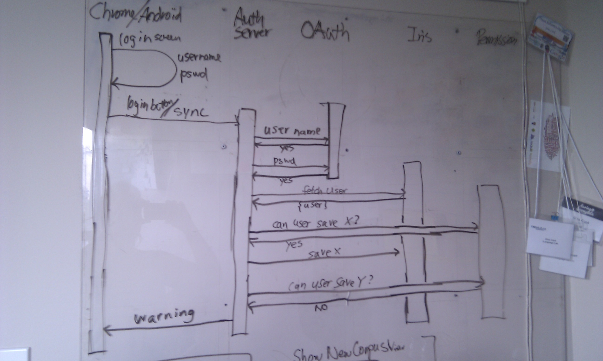In this video we look at what happens when a new user comes to the app, and how we let them play with LingLlama's sample data until they feel like making their own corpus.
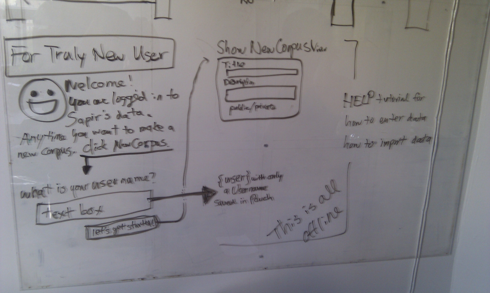In this video we discuss offline authentication, how a user must use a password to be able to edit confidential data offline. We are using something similar to http://en.wikipedia.org/wiki/Public-key_cryptography#A_postal_analogy
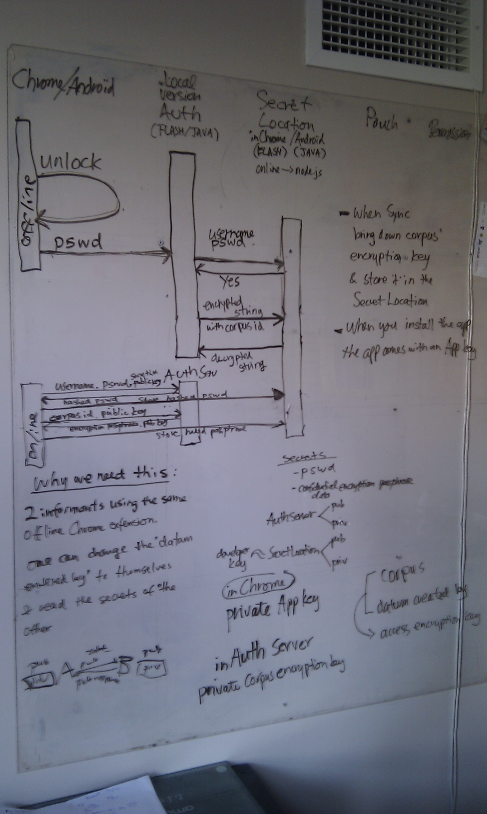This week continued much from last week. We also prettified the app, using Bootstrap by Twitter, a framework for cute buttons, icons and fonts. There is still the import and search user stories to complete and modules to connect. We connected the modules to PouchDB, the portable offline version of CouchDB. We are still working on getting the Offline corpus to work on Android using TouchDB. As far as we know, we are the 3rd large project to use TouchDB, it's implementation of CouchDB might not even be complete so we might have to help them out so that we can use it. The PouchDB folks have also found out we were watching them and have also been implementing things around the clock. The database that PouchDB is using (IndexedDB) is an HTML5 specification that wasn't even implemented until 6 months ago in December. We are using a special advance developers version of Chrome that will be availible only in August, when we launch. Talk about being on the bleeding-edge of development!
In addition, this week we created a new folder entitled docs which contains files that are designed to help those interested who want to use this project for their data collection and need a methodology section for their grant (or want to add a programming budget to their grant app to finish the "dream modules").
If you're a fieldlinguist and you are curious about our app, these docs are for you. You can get either the .pdf or the .tex files. In these files, you will find information about our goals and objectives, evaluation metrics, and estimations of time and cost. https://github.com/OpenSourceFieldlinguistics/FieldDB/tree/master/docs
We also stated the refactor (the re-doing) of the Datums and Sessions. Here is Hisako explaining how the Datums and Sessions will "learn" and adapt to the team that is building their corpus.
This week implemented more views and clarify the connections between different modules. We started with what Emmy coined "boardcasts" showing the control flow for 3 different "User Stories." We have begun refactoring the site to reflect the ER diagram. Additionally, we connected our modules to IrisCouch, a hosting service for databases (a couch in cloud, it costs $1 per gigabite per month). In addition, we implemented pagination for the datalist view.
Here is a boardcast about the sequence of events happening in the paginator with explaination in terms of the DataList for our application. DataLists are like favorites where users can put together a list of datum for a special purpose like creating a handout for a conference, or a list of data to prepare for a session with a consultant etc. DataLists can be pretty big, so we need to "paginate" them. we have decided to paginate them by sorting the most recent first.
Here is a screencast that looks at the code that corresponds to the boardcast.
In implementing the connection between views and modules we want to start fleshing out the views with handlebars and integrating them into the app. This video will start you out with your handlebars template and takes you through backbone to finally render the view.
This second video is a more complicated example involving partials.
This week we set up the corpus database using CouchDB hosted on IrisCouch and wrote more testing code which specifies what functions the module must complete. Tests serve as documentation for what each class (you can think of classes as module) does. Tests also serve as sample client code for future developers when they want to use the modules, they can look at the module's tests to how to use the module's functionality.
We also set up a testing environment for embedding widgets such as {DataList Widget, Data Search Widget, Activity Feed Widget} into a WordPress post. Note, the testing post is private, use password "fieldlinguistics" to see it. The web widgets will allow linguists to let others interact with their data on their blogs.
We have an initial implementation of ActivityFeeds, Datum Menus, the Lexicon indexer and the Confidentiality encryption using the AES encryption standard approved by the US Federal Government.
We wrapped up the week with a cleaned up diagram for how the modules are related, in the form of an Entity Relationship Diagram.
This week we finished the documentation for what each class (you can think of classes as module) does.
We also published the Software Requirements Specification and put up a public Wiki page with a description, team members and non-technical details telling the world what we are up to.
Jenkins is set up and building the project every time someone commits to GitHub. When the build fails, Jenkins emails the group (this encourages us to do code review and make sure at least two pairs of eyes see the code that get checks in.) Jenkins is public so anyone outside the project can also see if the builds are succeeding.
If the builds succeeds Jenkins is also continuously deploying to the actual website.
The main dashboard can be very cluttered: have a team feed, multiple data entries, and the drop down quick search (a la spotlight), This one is the Llama skin:
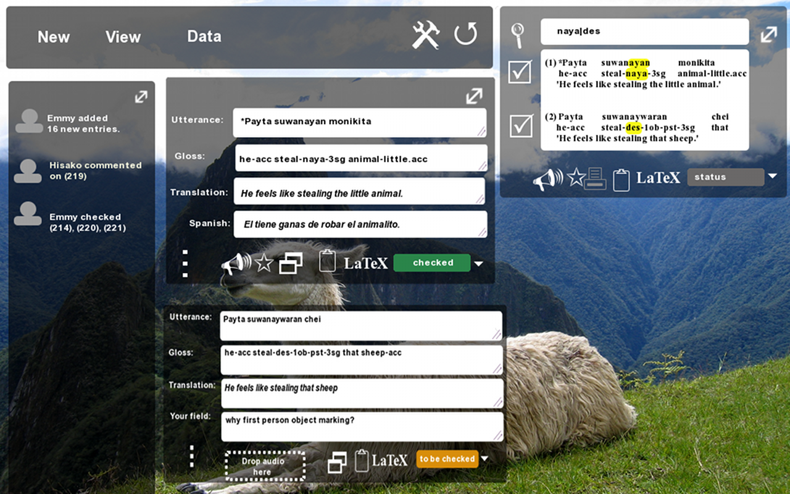The data entry page could be much less cluttered, here is an example of the three dots extended:
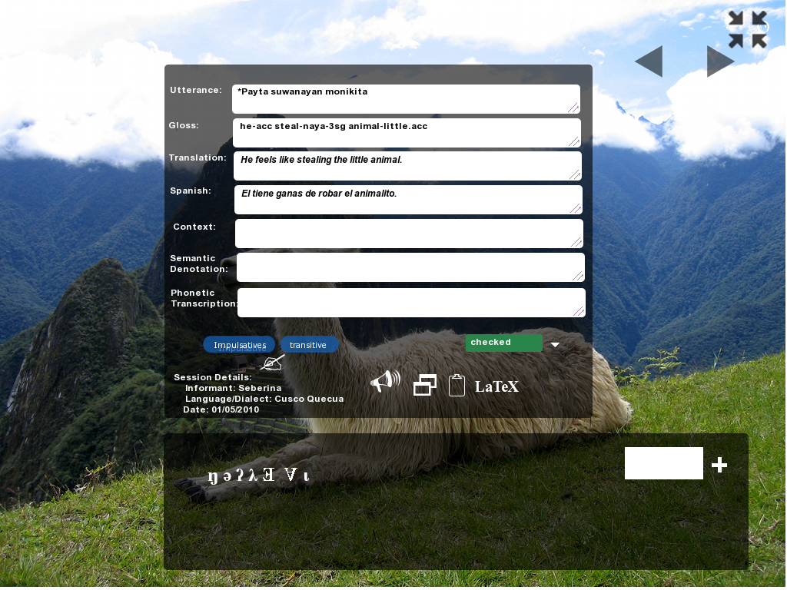 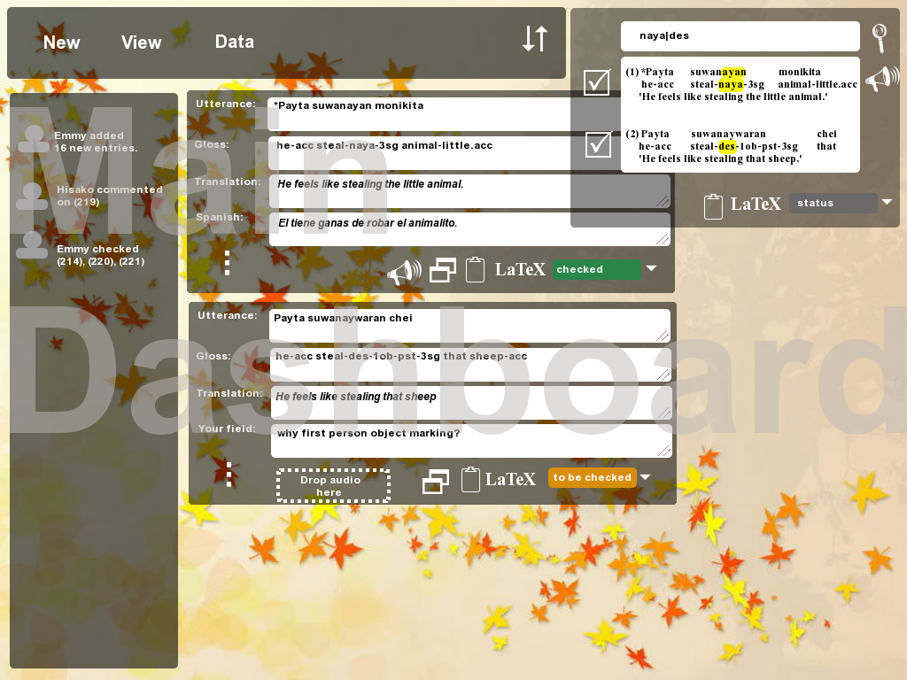 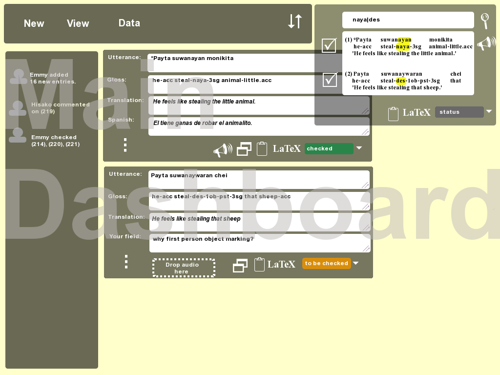 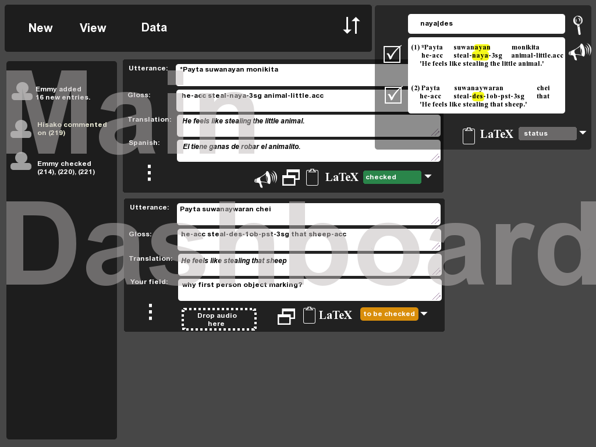We got together and started desigining the UI. Below are this week's deliverables.
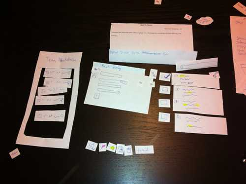General Layout-- each component (newsfeed, list, and datum entry page can be moved and minimized)
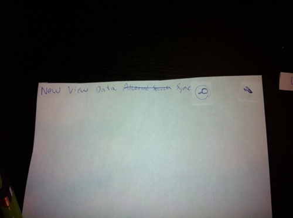The menu bar now has a search bar and preferences.
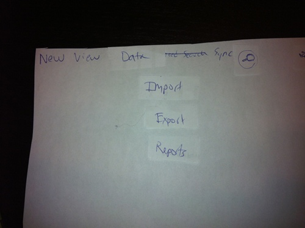In addition, there is a new dropdown menu for data.
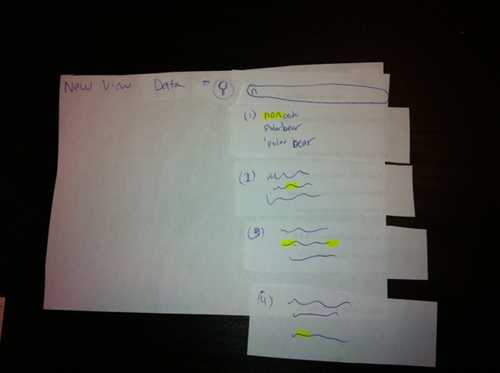Search bar expands down into the list view.
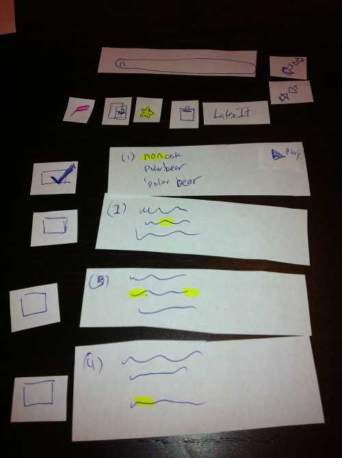The list view will have check boxes and datum Menu bar.
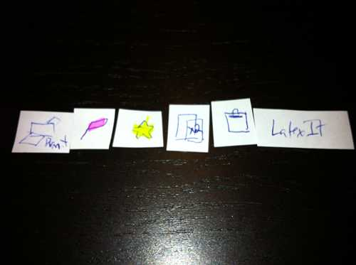This is the datum menu bar. It will only appear when you mouse over
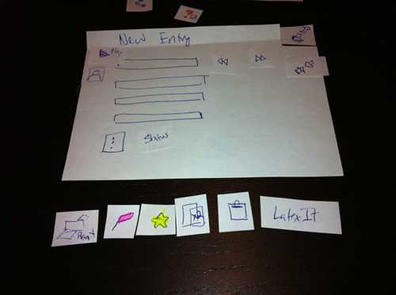 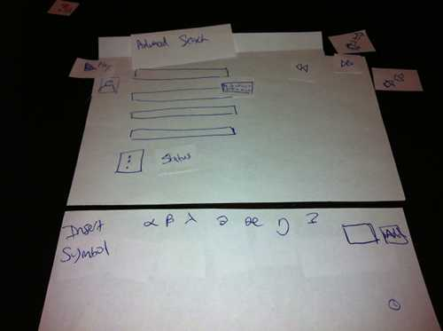There will be a little keyboard button underneath the phonetic and orthography lines. In addition, we will give users the option of typing in TIPA that will automatically insert the correct character.
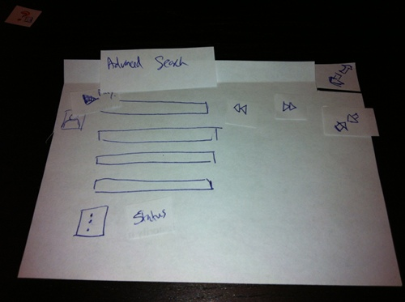The advanced search will look exactly like datum page.
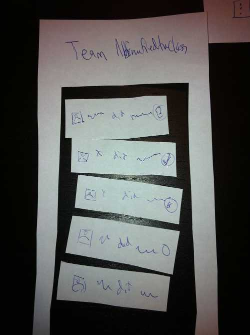The News Feed gives team notifications.
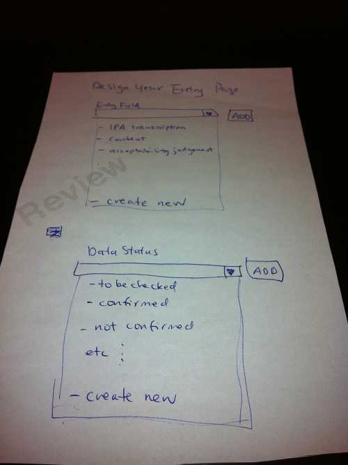These preferences will be accessed from wrench.
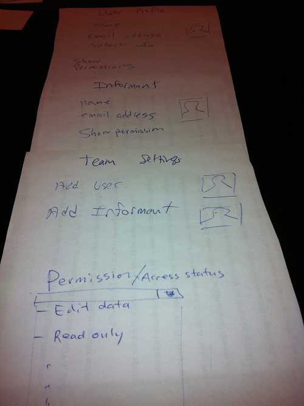Here are other various preferences and permissions.
https://groups.google.com/a/chromium.org/forum/?fromgroups=#!searchin/chromium-extensions/whitelisting/chromium-extensions/TRgqg90L8XU/NZF9wD41Jg0J
Today we had a very exciting deployment of our Chrome app.
To get around a warning (which shouldn't apply to us? This is not a "new application," we have been in the Chrome store for 40 weeks.)
An error occurred: The package is using features that are no longer permitted in new applications.
Search results mentioned we needed to do this:
http://developer.chrome.com/stable/apps/first_app.html
But when we published, the chrome store said we had to wait to use the new packaged apps.
An error occurred: Temporarily, you are not allowed to upgrade to the new packaged apps. This restriction will be lifted once we enable the new packaged apps for everyone.
So some more googling revealed this as another potential reason for why we couldn't deploy:
http://blog.chromium.org/2012/11/restricting-extension-apis-in-legacy.html
So we removed all urls from our permissions, and we were able to deploy.
We have sucessfully published our app, which no users can use.
They cannot contact their databases on iriscouch.com, due to no white listing for CORS:
https://chrome.google.com/webstore/detail/lingsync-testing/eeipnabdeimobhlkfaiohienhibfcfpa/related?utm_source=chrome-ntp-icon
XMLHttpRequest cannot load https://ifielddevs.iriscouch.com/_session. Origin chrome-extension://eeipnabdeimobhlkfaiohienhibfcfpa is not allowed by Access-Control-Allow-Origin.
How is whitelisting handled for the new packaged apps, if we can't list hosts in the permissions? I suspect we aren't the only ones in this specific CORS position, so I figured I might email the list. What do you recommend fo this transition period. All the docs say we can put urls...
http://developer.chrome.com/extensions/declare_permissions.html
The app is useless for our users, and will remain useless until we understand what is the replacement for urls in the permissions. I will keep looking for a solution. If I find a solution I will post back to the list, but if anyone else has already figured out how to whitelist, or more importantly, if it is impossible or complex, please let us know.